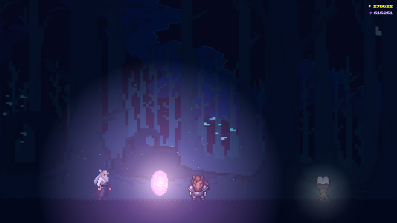

Take a few runs beneath the Veil with the old gods at your side. The demo is free, and if it hooks you, the full game is on its way.

Performance is one of our core priorities, so UnderVeil is built to run on a modest laptop as well as a gaming rig. We don't want to be like those badly unoptimized games that frustrate players before they even start.
Not sure what's in your PC? Press Windows + Pause, or open Settings › System › About, to see your processor and memory.
| MinimumPlayable, around 60 FPS | RecommendedSmooth, 60 FPS or higher | |
|---|---|---|
| OS | Windows 7 / 8 / 10 (32-bit or 64-bit) | Windows 10 (64-bit) |
| Processor | 1.8 GHz dual-core | 2.4 GHz dual-core or better |
| Memory | 2 GB RAM | 4 GB RAM |
| Graphics | DirectX 9 compatible, 128 MB VRAM | DirectX 9/11 compatible, 512 MB VRAM |
| Storage | 200 MB available space | 200 MB available space |
| Notes | Keyboard and mouse required | Headphones recommended for the best audio |
Your PC can handle it? Then the Veil is waiting.
Get the free demo on itch.io (opens in a new tab)